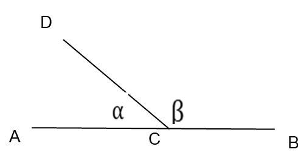
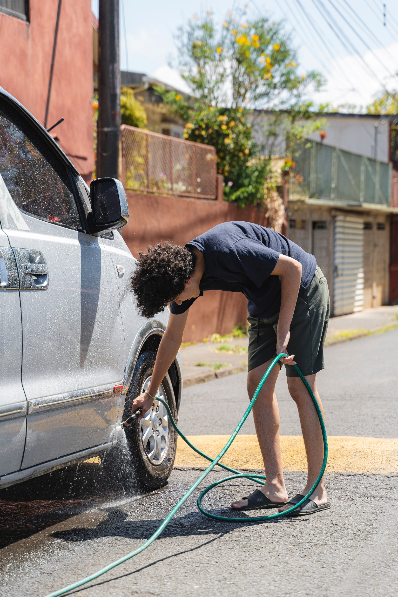

אין כמו תרגול לחיזוק הלמידה
3 שאלות
וכבר בהתחלה יש רמז! ענו נכון על 2 שאלות ומעלה כדי להתקדם.

1. רינה הכינה פרחי שוקולד משני סוגים: שוקולד לבן ושוקולד מריר.
היא רצתה לסדר אותם בתבנית עם 50 שקעים.
היעזרו ביישומון, בחרו סוג שוקולד, וצבעו את המשבצות בהתאם ליחס הנדרש בכל סעיף, וענו על השאלות.
א. היחס בין מספר פרחי השוקולד המריר למספר פרחי השוקולד הלבן הוא 9 : 1.
ב. כעת היחס בין מספר פרחי השוקולד המריר למספר פרחי השוקולד הלבן
הוא 3 : 1.
ג. רונית טוענת שכאשר היחס בין מספר פרחי השוקולד המריר למספר פרחי השוקולד הלבן הוא 3 : 1,
אפשר לחשב מראש כמה פרחי שוקולד נקבל מכל סוג.
מספר פרחי השוקולד הלבן הוא 14 · 50 = 12.5.
מאחר שלא ייתכן לקבל חצי פרח שוקולד, יישארו לנו שקעים ריקים.
האם רונית צודקת?
2. בסרטוט נתונה ∢ACB וקטע CD היוצא מקודקוד הזווית ומחלק אותה לשתי זוויות α ו-β. היחס בין α ל-β הוא 7 : 2.
סמנו את המשפטים הנכונים:

3. במסיבת פורים של תנועת הנוער, רועי ועינת רצו לקנות יחד את "כרטיס הזהב" הגדול שמחירו 12 שקלים, כדי להגדיל את הסיכוי שלהם לזכות בפרס.
הם אספו את המטבעות שהיו להם בכיס:
רועי מצא 5 שקלים.
עינת מצאה 7 שקלים.
א. מהו היחס בין ההשקעה של רועי לבין ההשקעה של עינת?
רועי ועינת זכו בפרס הגדול של 120 שקלים!!! עכשיו הם רוצים לחלק את 120 השקלים בצורה הוגנת, לפי יחס הכסף שכל אחד מהם שילם בקניה.
ב. סמנו את התשובה הנכונה:
ג. רועי הציע חלוקה אחרת: "מכיוון שזכינו ב-120 שקלים, בואו פשוט נתחלק חצי-בחצי, וכל אחד מאיתנו יקבל 60 שקלים". עינת אמרה שההצעה של רועי אינה הוגנת כלפיה.
סמנו את המשפטים הנכונים מתמטית:
יופי של עבודה!
הנה עוד 2 תרגילים ברמת קושי גבוהה יותר.

נעמי ויוני עבדו יחד בשטיפת מכוניות בשכונה.
נעמי עבדה 2 שעות ויוני עבד 5 שעות.
הם החליטו לחלק את הכסף שירוויחו לפי היחס
בין מספר השעות שעבד כל אחד (כלומר יחס של 5 : 2).
א. השלימו את המשפטים הבאים: אם נעמי ויוני ירוויחו יחד 210 ש"ח הם יחלקו את הכסף ביניהם בצורה הבאה:
בשבוע לאחר מכן שוב עבדו נעמי ויוני בשטיפת מכוניות.
היחס בין מספר שעות העבודה היה 2:5.
הפעם הם הרוויחו סכום כסף חדש ולא ידוע.
יוני חישב ומצא כי חלקו ברווחים היה 100 ש"ח.
ב. איזה מהמשפטים הבאים מתאר נכונה את החלוקה ביניהם?
2. מיה ועומר זכו ב-90 ש"ח, האם הם יכולים לחלק את הכסף ביחס הנתון (5 : 2) כך שכל אחד מהם יקבל כסף בשטרות?